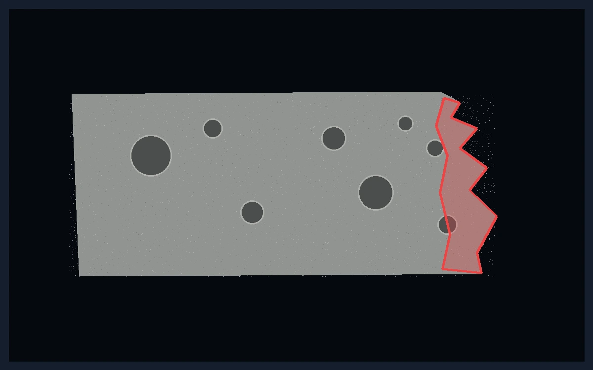
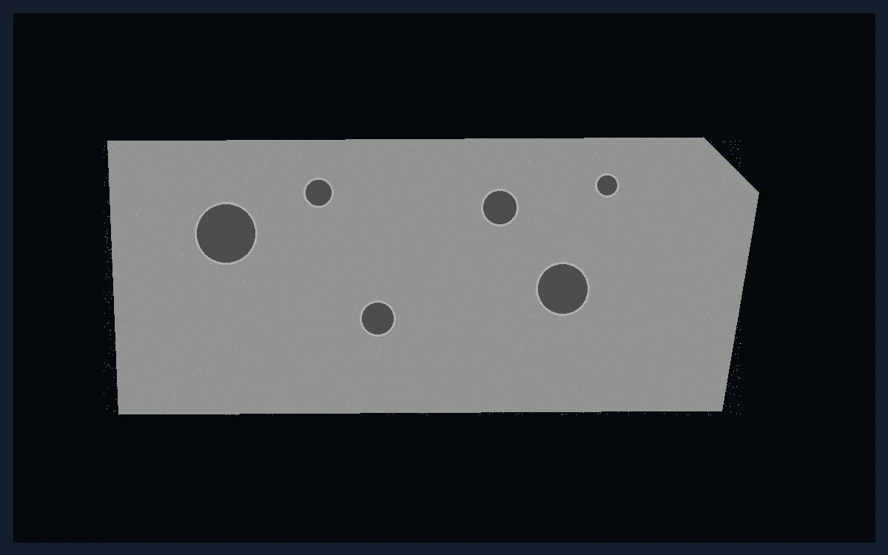

Good
Torn edge detected


Shape & edge quality
Torn, broken, or malformed product
AI models learn what good looks like for a specific product, then flag pieces that are torn, broken, folded, collapsed, or malformed before they reach customers.
- Detect subtle edge breaks
- Reduce customer complaints
- Consistent quality at line speed